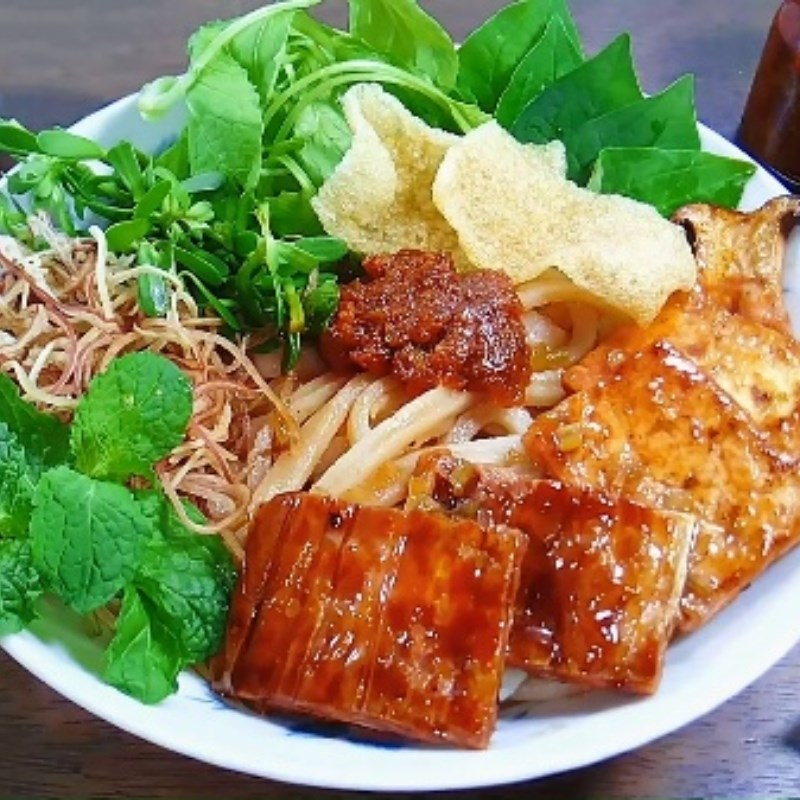

Cao Lầu
Cao Lầu là một món ăn đặc sản của thành phố Hội An, miền Trung Việt Nam. Món ăn này có hương vị đặc trưng, kết hợp giữa sợi mì dày, dai, nước dùng thơm ngon cùng với thịt heo, rau sống và bánh phồng chiên giòn. Món ăn này được biết đến với sự kết hợp hoàn hảo giữa các nguyên liệu tươi ngon và hương vị đậm đà, đặc biệt là nước dùng được ninh từ xương heo và gia vị riêng biệt. Cao Lầu không chỉ nổi bật trong nền ẩm thực Hội An mà còn trở thành một món ăn được yêu thích ở nhiều nơi.

Nguyên Liệu
- 200g mì Cao Lầu
- 200g thịt heo (thịt ba chỉ hoặc thịt chân giò)
- 100g rau sống (xà lách, húng quế, rau thơm)
- Bánh phồng chiên
- Gia vị: Nước mắm, đường, tỏi, hành, tiêu
Hướng dẫn cách làm
- Luộc thịt heo, sau đó thái thành miếng vừa ăn.
- Nấu nước dùng từ xương heo, thêm gia vị như hành, tỏi, tiêu và nước mắm để tạo ra nước dùng đậm đà.
- Luộc mì Cao Lầu, sau đó trụng qua nước nóng để mì mềm và giữ được độ dai đặc trưng.
- Cho mì vào tô, xếp thịt heo lên trên, thêm rau sống và bánh phồng chiên.
- Chan nước dùng lên trên và thưởng thức.